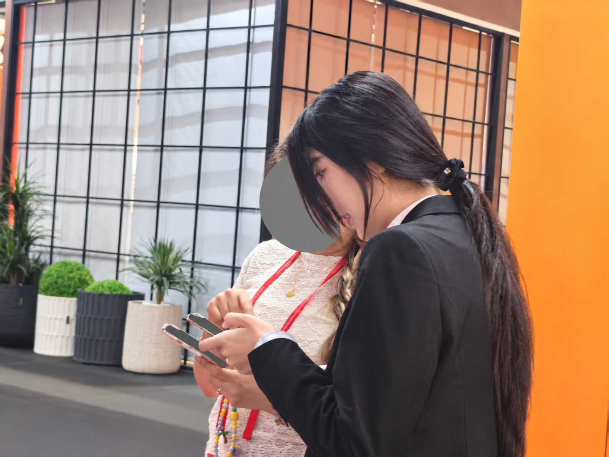
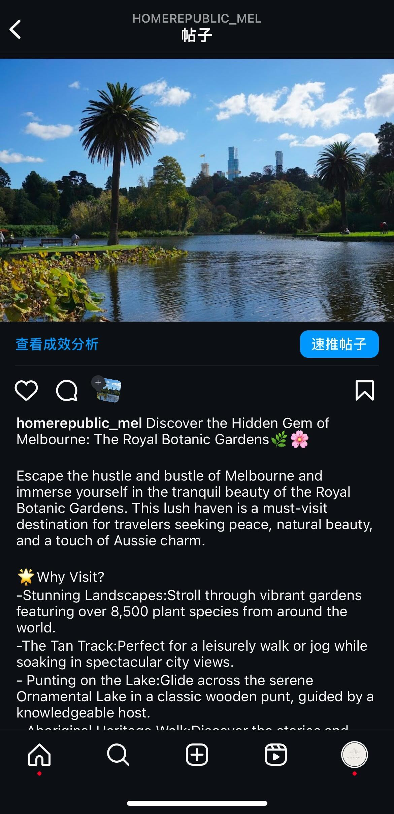

毛毯视频，让产品先被看见A throws video that drew attention
80.9K 浏览views · 155 互动interactions
原帖与 Facebook / Instagram 广告合并统计；数据对应这一条视频。Combined original-post and Facebook/Instagram ad data for this one video.海外社媒运营、英文内容与 AI 创意。我把产品信息变成面向海外受众、可进入采购对话的内容。Overseas social media, English content and AI creative. I turn product information into content that helps start buyer conversations.
80.9K 为该帖原帖与 Facebook / Instagram 广告合并浏览；180+ 篇与 24 条为锦汉实习个人工作记录。均可查看原始证据。80.9K combines the post and Facebook/Instagram ad views. The 180+ pieces and 24 films are personal work-log figures from JINHAN; source evidence is linked below.


北美达人开发、英文建联、纯佣寄样与内容交付。US creator research, English outreach, affiliate gifting and content delivery.
从真实帖子、视频封面、沟通截图进入案例。Start with real posts, video covers and buyer conversations.
80.9K 浏览views · 155 互动interactions
原帖与 Facebook / Instagram 广告合并统计；数据对应这一条视频。Combined original-post and Facebook/Instagram ad data for this one video.7 条真实合作视频published collaboration posts
眼线笔与睫毛膏：筛选、沟通、寄样、视频建议与跟进。Eyeliner and mascara: research, outreach, gifting, feedback and follow-up.AI 创意 / 放映室AI CREATIVE / SCREENING ROOM查看短片、倒计时系列与制作记录 ↗Films, countdowns and process ↗

澳洲市场内容AUSTRALIAN MARKET CONTENT / HOME REPUBLIC墨尔本生活方式 · 英文文案Melbourne lifestyle · English copy
查看原始社媒内容与项目说明。See original social content and project notes.四种不同的第一眼，直接点开看成片。Four different opening hooks. Play the finished films here.
锦汉项目中，我围绕材质、场景和季节需求写英文内容。买家提出品类问题后，再说明可对接的资源并记录跟进信息。网站保留 14 条脱敏沟通记录；它们不代表成交。At JINHAN, I wrote English content around materials, use cases and seasonal demand. Buyer questions led to resource explanations and follow-up details. The site holds 14 anonymized conversations; they do not prove sales.
查看买家沟通原图 ↗View buyer conversation evidence ↗展会现场沟通与澳洲市场英文内容，分别呈现两种面向人的表达。A buyer conversation and Australian market content show two ways of connecting with an audience.
证书与团队奖名单均可查看。View original certificates and team award lists.
英文 B2B 内容、跨平台表达、AI 视频构思剪辑，以及依据真实后台数据和买家反馈复盘。B2B English content, platform-specific expression, AI video concepts and editing, with reviews grounded in source analytics and buyer feedback.
ChatGPT / Codex · 可灵 / 即梦Kling / Jimeng · Excel (VLOOKUP / SUMIF) · Canva / 剪映CapCut
广西民族大学 · 播音与主持艺术本科（2023.09—2027.06）Guangxi Minzu University · BA, Broadcasting and Hosting (2023.09—2027.06)
IELTS 6.5 · CET-6 · 普通话一级乙等Putonghua Level 1-B
查看六类完整原始目录 ↗Explore the complete source archive ↗如需了解项目细节，欢迎邮件联系。Email me for more detail on the work.